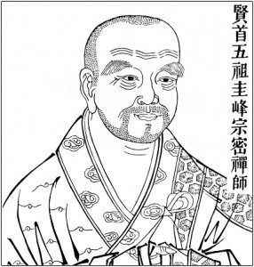

Guifeng Zongmi (圭峰宗密, 780–841) was a Tang dynasty Buddhist monk who held a unique dual position: he was recognized as the fifth patriarch of the Huayan school and a lineage holder in the Heze school of Chan Buddhism. This made him a rare figure who could bridge the doctrinal and meditative traditions.
On Humanity (Yuanren lun 原人論) is not a neutral survey. It is a polemical work arguing for the superiority of Zongmi's brand of Buddhism over Confucianism, Daoism, and rival Buddhist sects. The title itself may be a deliberate rebuttal to Han Yu's anti-Buddhist essay "On the Way" (Yuandao 原道).
Zongmi acknowledges that Confucianism and Daoism "both have some value" but argues that each contains only partial truths. He then ranks Buddhist teachings from lowest (Hinayana) to highest (the Huayan/Chan synthesis). This is the panjiao (判教) method: a ranked classification of all teachings.
Zongmi wrote at the peak of Buddhist influence in Tang China, but also at a moment of intense pushback. Confucian intellectuals like Han Yu (768–824) attacked Buddhism as a foreign religion that corrupted Chinese society. Han Yu's famous "Memorial on Bone-relics of the Buddha" (819 CE) urged the emperor to reject Buddhist relics and ban the religion.
Zongmi's response is clever. He does not dismiss Confucianism and Daoism outright. He acknowledges their value, then shows their limitations. His message: you don't have to reject Chinese tradition to accept Buddhism. Buddhism simply goes deeper. Kongzi, Laozi, and Shakyamuni were all sages who "established their teachings along different paths in accordance with their eras" (p. 100). But only Buddhism provides both conditional and full explanations.
This text is one of the clearest expressions of the "Three Teachings" (sanjiao 三教) framework that shaped Chinese intellectual life for over a millennium. Confucianism handles social ethics. Daoism handles cosmology. Buddhism handles the mind, suffering, and ultimate reality. Zongmi's innovation is ranking them, with Buddhism on top.
Zongmi summarizes the shared cosmology of Confucianism and Daoism: the primordial chaos divides into yin and yang, which generate Heaven, Earth, and humans. The myriad things have qi (氣) as their foundation. Therefore "ignorance and wisdom, prestige and lowliness, poverty and wealth, suffering and happiness are all endowed by Heaven, according to fate" (p. 100).
Zongmi acknowledges that these teachings have value. Kongzi, Laozi, and Shakyamuni were all sages. But he insists that Confucianism and Daoism only offer "conditional" explanations, while Buddhism provides "full" ones. The two Chinese traditions "each really contains only partial truths whose value is limited to particular contexts" (p. 99).
Zongmi levels a series of sharp philosophical objections against the Confucian-Daoist worldview:
"If the allotments are up to Heaven, why is Heaven so unfair? Moreover, there are those who do wrong but get prestige, those who do right but are impoverished, those who lack Virtue but are wealthy, those who have Virtue but are poor." p. 102; trans. Bryan W. Van Norden
Zongmi explains the Hinayana (early Buddhist) teaching: the body and thoughts of the mind are born and perish every instant, in a never-ending succession, "like the flowing of a stream or the flickering of a lamp" (p. 102). Body and mind contingently combine, seeming to be a unity and seeming to be constant. But the "I" is an illusion.
The analysis is thorough. The body has Four Elements (earth, water, fire, wind) and Four Aggregates of mind (sensation, perception, volition, consciousness). If each of these were the "I," there would be eight selves. Within the element of earth alone there are 360 bones, each distinct. The activities of the mind are not the same: "seeing is not hearing, delight is not anger" (p. 103). Which one is the "I"?
"No matter how much one reflects and reasons about it, the 'I' cannot be found. Only then does one come to the insight that this body is simply a phenomenon that results from the contingent coming together [of the Four Elements of bodily form and the Four Aggregates of mind]. Ultimately, there is no 'I.'" p. 103; trans. Bryan W. Van Norden
Valuing the false "I" gives rise to the three poisons: craving (for fame and profit), anger (at what threatens the "I"), and delusion (fantasies contrary to the Pattern). These stir up actions and speech that create karmic consequences, trapping beings in the cycle of the Five Destinies: rebirth in Heaven, as a human, as a hungry ghost, as an animal, or in Hell (p. 103).
Zongmi acknowledges that "even Hinayana, the most shallow teaching in Buddhism, already surpasses the deepest explanation of other doctrines" (p. 103). It explains what Daoism cannot: that qi has gone through countless millions of sequences of formation, continuation, destruction, and emptiness before this world even formed.
But Hinayana has its own limits. Zongmi raises two objections:
These gaps lead Zongmi to his highest teaching: the One Vehicle.
According to the Teaching of the One Vehicle that Reveals the Nature, everything that has feelings has a fundamentally conscious true mind. "Without any beginning, it has always remained pure, shining without shadow, always completely knowing" (p. 104). This is also called "Buddha nature," the "Storehouse of the Thus-Come," or simply the true mind.
Misguided thoughts have covered the true mind, so people do not recognize it. They only see the everyday world and become entangled in karmic consequences and the bitterness of birth and death. The Buddha revealed that everything is empty of a separate self, and that "the conscious true mind of purity is one with all the Buddhas" (p. 104).
The true mind, which is neither generated nor extinguished, is combined with deluded thoughts, which generate and are extinguished. This combination is called the Storehouse Consciousness (alaya-vijnana). It has the twin significance of awareness and non-awareness. Thoughts are first stimulated because of non-awareness, then transform into the consciousness that perceives, then into "clinging to things" and the formation of the "I" (p. 105).
"Because one clings to such things, one sees a distinction between oneself and other things, and from this is formed the clinging to the 'I.' Similarly, one craves the objects that accord with one's feelings, desiring to satisfy this 'I.' From this point, ignorant feelings transform and get worse and worse." p. 105; trans. Bryan W. Van Norden
Zongmi now answers his own critique of Confucianism. Why do the virtuous suffer and the wicked prosper? Because karmic consequences from previous lives determine one's current fortune. "These are all determined by the detailed karmic consequences of actions in previous lives. This is what accounts for the differences between what happens 'spontaneously' in one's current lifetime" (p. 105).
"Scholars of other schools do not know about previous existences, but only rely on what is currently visible to them, so they advocate only spontaneity" (p. 105). They see the effects without knowing the causes. Buddhism alone can trace the full chain of causation across lifetimes.
The qi with which we are endowed, when inferred all the way back to its foundation, is the primordial qi of the undifferentiated chaos. But the mind that arises, when investigated to its source, "is the spiritual mind of genuine unity" (p. 105). Even the primordial qi is a transformation of the mind. It belongs to the transformation of consciousness, which is part of the Storehouse Consciousness.
Justin Tiwald & Bryan W. Van Norden, eds., Readings in Later Chinese Philosophy: Han Dynasty to the 20th Century (Hackett, 2014).
Selection 17: Zongmi, On Humanity, pp. 98–106. Trans. Bryan W. Van Norden.